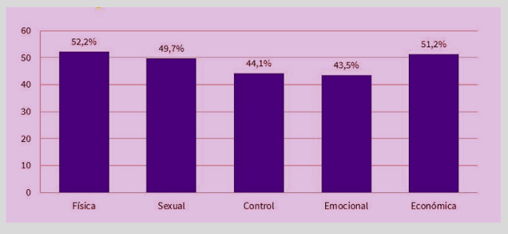

La violencia de género es cualquier acto de violencia física, psicológica, sexual, económica o simbólica que afecta a una persona por razón de su género, especialmente a las mujeres, y que tiene como objetivo mantener o reforzar la desigualdad.
Abarca una amplia gama de comportamientos, desde el acoso sexual, la violación y el maltrato físico y emocional, hasta formas más sutiles de control y coerción. Se fundamenta en las relaciones de poder históricamente desiguales entre hombres y mujeres.
1 de cada 3 mujeres ha sufrido algún tipo de violencia a lo largo de su vida.
